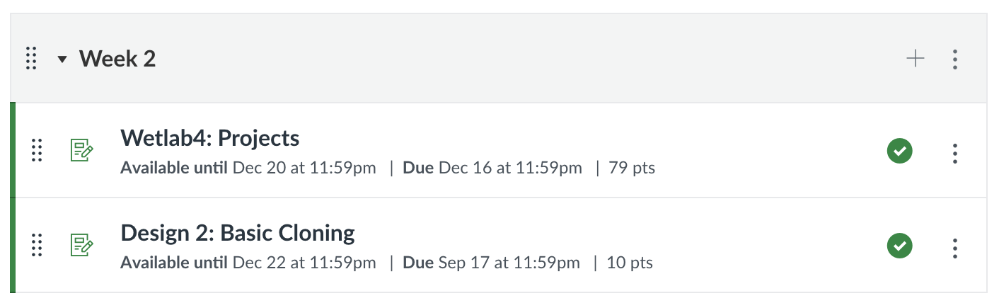
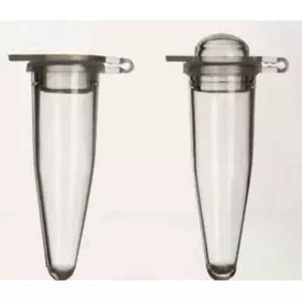
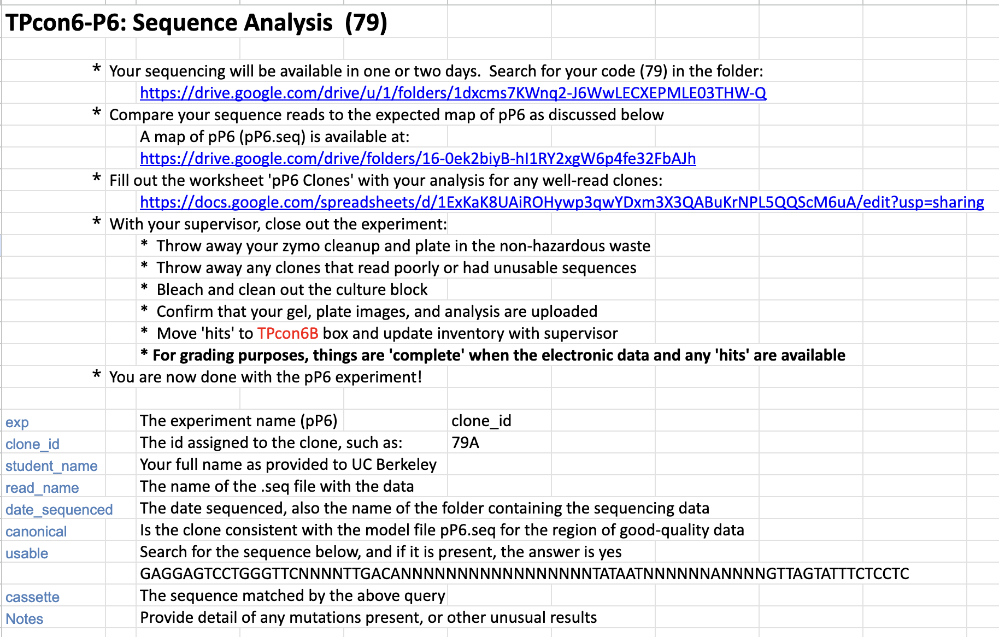
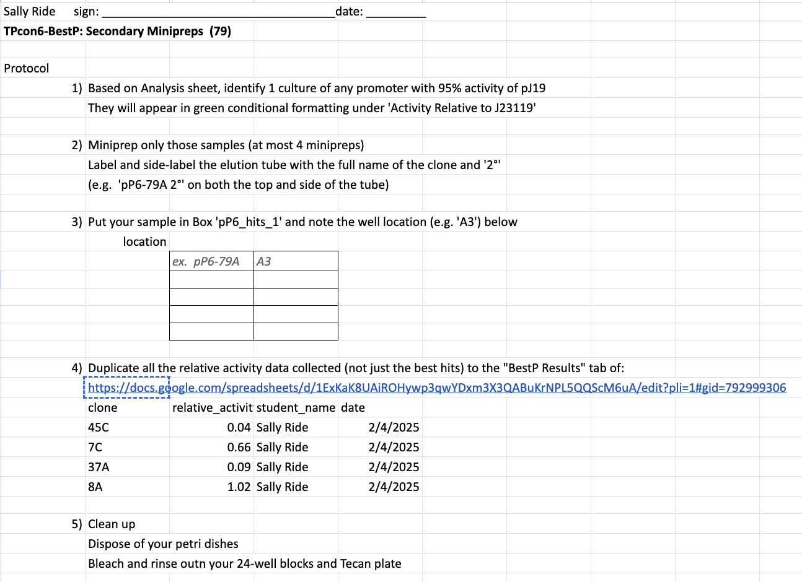
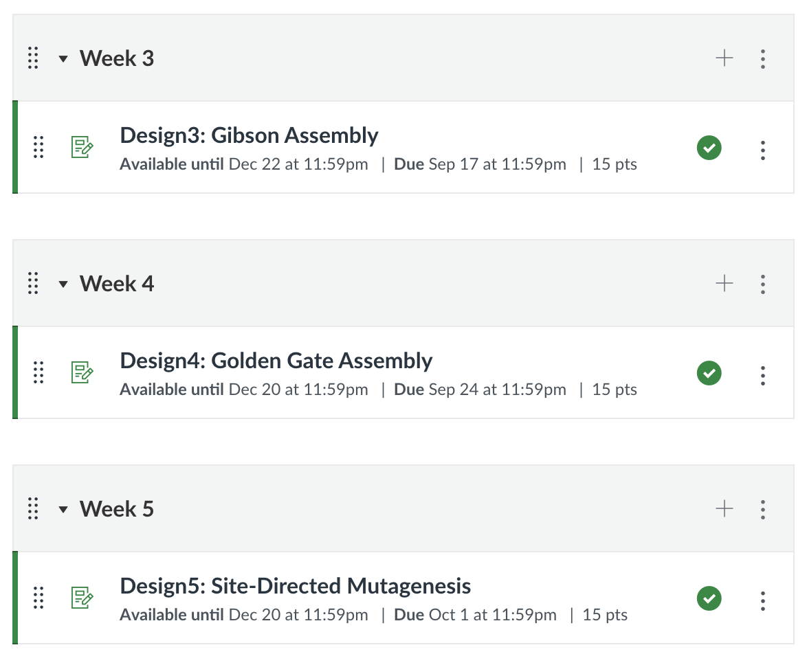

A full-bleed blue slide, the same blue as the title slide, reading All-Hands. The lecture ends here and the weekly meeting begins.
Office Hours and Wetlab Availability
Javad: 2-3pm Tuesday
JCA: 2-3pm Thursday (and 6pm Wednesday on Zoom)
M
Tu
W
Th
F
2
wetlab
OH/lab
wetlab
OH/lab
wetlab
3
wetlab
wetlab
wetlab
4
5
6
Zoom OH
Office hours and wetlab availability. Javad holds office hours 2 to 3pm Tuesday; JCA holds them 2 to 3pm Thursday, and 6pm Wednesday on Zoom. Below, the week as a grid, days across and hours down. At 2pm: wetlab Monday, Wednesday and Friday, office hours or lab Tuesday and Thursday. At 3pm: wetlab Monday, Wednesday and Friday only. Nothing at 4 or 5. At 6pm: Zoom office hours on Wednesday, the one entry that is not in the building.
Week 2 Assignments

A screenshot of the Week 2 module on bCourses. It holds two published assignments: Wetlab4: Projects, due Dec 16, 79 points; and Design 2: Basic Cloning, due Sep 17, 10 points.
Never let enzymes warm up! Only take the enzyme cooler out of the freezer when you are actively using it, and only take the tubes out of it when actively dispensing. Hold the enzyme tube by the top of the tube while dispensing and do not place it in a rack.
Do not let the enzymes warm up – do not put them in a rack, do not leave them out of the freezer for extended periods
The buffer tubes are not trash
Avoid domed cap PCR tubes

Flat CapDomed
Bench discipline. A box across the top: never let enzymes warm up. Only take the enzyme cooler out of the freezer when you are actively using it, and only take the tubes out of it when actively dispensing; hold the enzyme tube by the top while dispensing and do not place it in a rack. Three bullets repeat and extend that: do not let the enzymes warm up, do not put them in a rack, do not leave them out of the freezer for extended periods; the buffer tubes are not trash; avoid domed cap PCR tubes. Beside the bullets, a photograph of two PCR tubes. The left one, captioned Flat Cap, is the one to use. The right one, captioned Domed, is struck through with a red X.
Wetlab Project Results
The ‘Analysis’ page of pP6 and ‘miniprep’ page of BestP outline what you turn in
You do not need to give us physical paper


Wetlab project results. The Analysis page of pP6 and the miniprep page of BestP are what set out the deliverables, and nothing has to be handed in on paper. The two worksheets are shown side by side: the pP6 sequence analysis sheet on the left, with its field table, and the BestP secondary miniprep protocol on the right.
Week 3 Assignments

Should be done with pipette training in the next week, contact JCA if you haven’t gotten your points on bcourses
Should start pP6 this week or next at latest
A screenshot of the next three bCourses modules: Week 3, Design3: Gibson Assembly, due Sep 17; Week 4, Design4: Golden Gate Assembly, due Sep 24; Week 5, Design5: Site-Directed Mutagenesis, due Oct 1. Fifteen points each. Two reminders follow, one at a time.